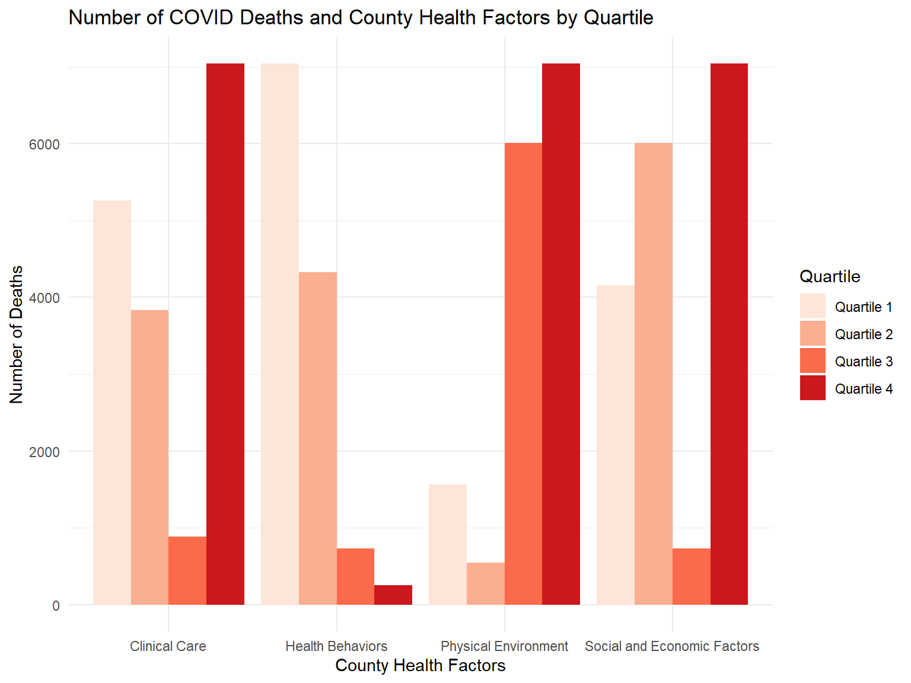
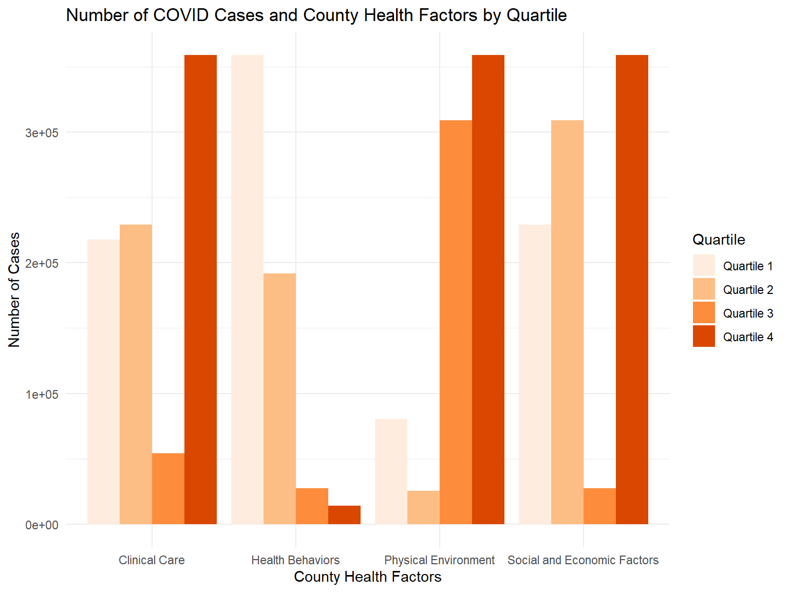
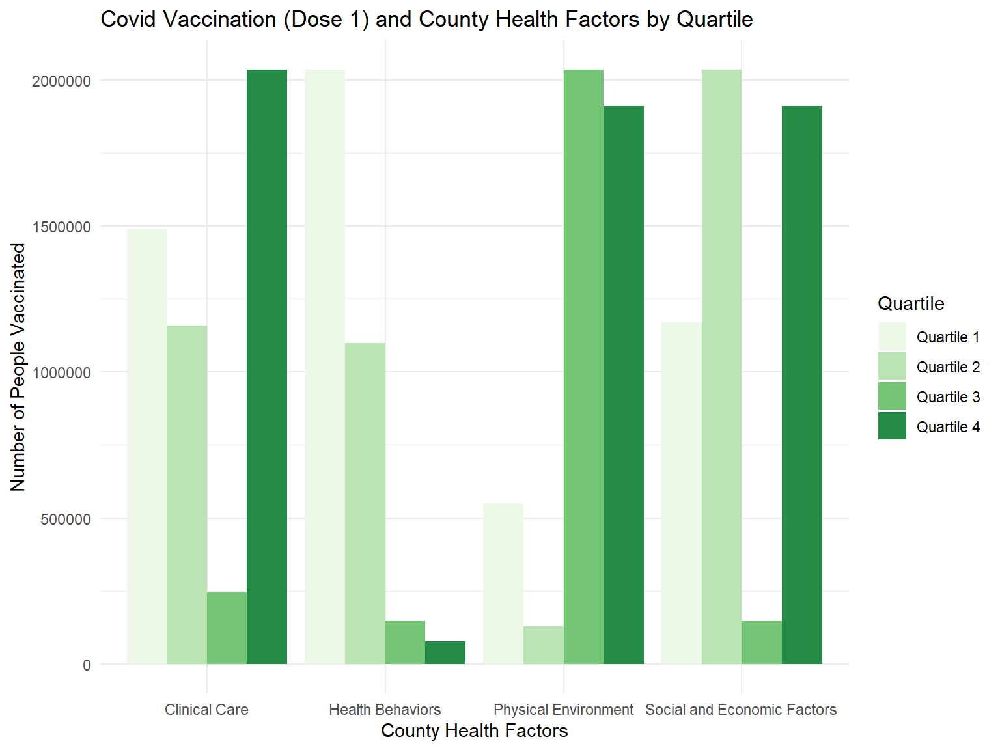

census_api_key("aa512886c5449a582d837da8d3a07af66a043fe5")
census_data <- load_variables(2020, "acs5", cache=T)
fwrite(census_data, "census_variables.csv")
vars <- c(tpop = 'P001001',
medage = 'P013001',
wpop = 'P003002',
bpop = 'P003003',
apop = 'P003005',
hpop = 'P004003')
nys_df <- get_decennial(state = "ny",
geography = "county",
variables = vars,
geometry = T,
output = "wide")
NY_df <- get_decennial(state = "ny",
geography = "county",
variables = vars,
geometry = T,
output = "wide")
NY_df = NY_df %>%
mutate(
county = gsub(" County, New York","",NAME))
nys_df = nys_df %>%
mutate(
county = gsub(" County, New York","",NAME))
nys_df$race_div <- 1 - (((nys_df$wpop*(nys_df$wpop-1))+
(nys_df$bpop*(nys_df$bpop-1))+
(nys_df$hpop*(nys_df$hpop-1))+
(nys_df$apop*(nys_df$apop-1)))/
(nys_df$tpop*(nys_df$tpop-1)))
nys_df = nys_df %>%
select(tpop, medage, county, race_div)
area = read_excel('data/pop_density.xlsx') %>%
janitor::clean_names() %>%
rename(area = value)
nys_df = left_join(nys_df, area, by = 'county') %>%
mutate(pop_d = tpop/area)
# 2019 HR Data
hr2019 = read_excel('data/ny_hr19.xls', sheet = 'Outcomes & Factors SubRankings', skip = 1) %>%
janitor::clean_names() %>%
slice(-c(1)) %>%
select(-starts_with("z"), -fips, -state) %>%
rename(longevity_r = rank_5,
qol_r = rank_7,
health_beh_r = rank_9,
clinical_care_r = rank_11,
ses_r = rank_13,
env_r = rank_15)
demo2019 = read_excel('data/ny_hr19.xls', sheet = 'Additional Measure Data', skip = 1) %>%
janitor::clean_names() %>%
slice(-c(1)) %>%
select('county',
'segregation_index_2',
'household_income',
'percent_hispanic',
'percent_african_american') %>%
rename(median_income = household_income,
segregation_score = segregation_index_2,
p_hispanic = percent_hispanic,
p_black = percent_african_american) %>%
mutate(segregation = case_when(segregation_score < 30 ~ 0,
segregation_score >= 30 ~ 1),
p_minority = p_black + p_hispanic)
sub_var19 =
read_excel('data/ny_hr19.xls', sheet = 'Ranked Measure Data', skip = 1) %>%
janitor::clean_names() %>%
slice(-c(1)) %>%
select(county, percent_smokers, percent_obese, food_environment_index, percent_physically_inactive, percent_with_access, percent_excessive_drinking, percent_alcohol_impaired, number_chlamydia_cases, teen_birth_rate, percent_unemployed)
list_2019 =
list(hr2019, demo2019, sub_var19)
total2019 =
list_2019 %>%
reduce(full_join, by = "county") %>%
mutate(year = 2019)
# 2020 HR Data
hr2020 = read_excel('data/ny_hr20.xlsx', sheet = 'Outcomes & Factors SubRankings', skip = 1) %>%
janitor::clean_names() %>%
slice(-c(1)) %>%
select(-starts_with("z"), -fips, -state) %>%
rename(longevity_r = rank_5,
qol_r = rank_7,
health_beh_r = rank_9,
clinical_care_r = rank_11,
ses_r = rank_13,
env_r = rank_15)
demo2020 = read_excel('data/ny_hr20.xlsx', sheet = 'Additional Measure Data', skip = 1) %>%
janitor::clean_names() %>%
slice(-c(1)) %>%
select('county',
'median_household_income',
'segregation_index_2',
'percent_black',
'percent_hispanic') %>%
rename(median_income = median_household_income,
segregation_score = segregation_index_2,
p_black = percent_black,
p_hispanic = percent_hispanic) %>%
mutate(segregation = case_when(segregation_score < 30 ~ 0,
segregation_score >= 30 ~ 1),
p_minority = p_black + p_hispanic)
sub_var20 =
read_excel('data/ny_hr20.xlsx', sheet = 'Ranked Measure Data', skip = 1) %>%
janitor::clean_names() %>%
slice(-c(1)) %>%
select(county, percent_smokers, percent_adults_with_obesity, food_environment_index, percent_physically_inactive, percent_with_access_to_exercise_opportunities, percent_excessive_drinking, percent_driving_deaths_with_alcohol_involvement, number_chlamydia_cases, teen_birth_rate, percent_unemployed) %>%
rename(percent_obese = percent_adults_with_obesity,
percent_with_access = percent_with_access_to_exercise_opportunities,
percent_alcohol_impaired = percent_driving_deaths_with_alcohol_involvement)
list_2020 =
list(hr2020, demo2020, sub_var20)
total2020 =
list_2020 %>%
reduce(full_join, by = "county") %>%
mutate(year = 2020)
# 2021 HR Data
hr2021 = read_excel('data/ny_hr21.xlsx', sheet = 'Outcomes & Factors SubRankings', skip = 1) %>%
janitor::clean_names() %>%
slice(-c(1)) %>%
select(-starts_with("z"), -fips, -state) %>%
rename(longevity_r = rank_5,
qol_r = rank_7,
health_beh_r = rank_9,
clinical_care_r = rank_11,
ses_r = rank_13,
env_r = rank_15)
demo2021 = read_excel('data/ny_hr21.xlsx', sheet = 'Additional Measure Data', skip = 1) %>%
janitor::clean_names() %>%
slice(-c(1)) %>%
select('county',
'median_household_income',
'segregation_index_2',
'percent_black',
'percent_hispanic') %>%
rename(median_income = median_household_income,
segregation_score = segregation_index_2,
p_black = percent_black,
p_hispanic = percent_hispanic) %>%
mutate(segregation = case_when(segregation_score < 30 ~ 0,
segregation_score >= 30 ~ 1),
p_minority = p_black + p_hispanic)
sub_var21 =
read_excel('data/ny_hr21.xlsx', sheet = 'Ranked Measure Data', skip = 1) %>%
janitor::clean_names() %>%
slice(-c(1)) %>%
select(county, percent_smokers, percent_adults_with_obesity, food_environment_index, percent_physically_inactive, percent_with_access_to_exercise_opportunities, percent_excessive_drinking, percent_driving_deaths_with_alcohol_involvement, number_chlamydia_cases, teen_birth_rate, percent_unemployed) %>%
rename(percent_obese = percent_adults_with_obesity,
percent_with_access = percent_with_access_to_exercise_opportunities,
percent_alcohol_impaired = percent_driving_deaths_with_alcohol_involvement)
list_2021 =
list(hr2021, demo2021, sub_var21)
total2021 =
list_2021 %>%
reduce(full_join, by = "county") %>%
mutate(year = 2021)
# 2022 HR Data
hr2022 = read_excel('data/ny_hr22.xlsx',
sheet = 'Outcomes & Factors SubRankings', skip = 1) %>%
janitor::clean_names() %>%
slice(-c(1)) %>%
select(-starts_with("z"), -fips, -state) %>%
rename(longevity_r = rank_5,
qol_r = rank_7,
health_beh_r = rank_9,
clinical_care_r = rank_11,
ses_r = rank_13,
env_r = rank_15)
demo2022 = read_excel('data/ny_hr22.xlsx', sheet = 'Additional Measure Data', skip = 1) %>%
janitor::clean_names() %>%
slice(-c(1)) %>%
select('county',
'median_household_income',
'segregation_index',
'percent_black',
'percent_hispanic') %>%
rename(median_income = median_household_income,
segregation_score = segregation_index,
p_black = percent_black,
p_hispanic = percent_hispanic) %>%
mutate(segregation = case_when(segregation_score < 30 ~ 0,
segregation_score >= 30 ~ 1),
p_minority = p_hispanic + p_black)
sub_var22 =
read_excel('data/ny_hr22.xlsx', sheet = 'Ranked Measure Data', skip = 1) %>%
janitor::clean_names() %>%
slice(-c(1)) %>%
select(county, percent_smokers, percent_adults_with_obesity, food_environment_index, percent_physically_inactive, percent_with_access_to_exercise_opportunities, percent_excessive_drinking, percent_driving_deaths_with_alcohol_involvement, number_chlamydia_cases, teen_birth_rate, percent_unemployed) %>%
rename(percent_obese = percent_adults_with_obesity,
percent_with_access = percent_with_access_to_exercise_opportunities,
percent_alcohol_impaired = percent_driving_deaths_with_alcohol_involvement)
list_2022 =
list(hr2022, demo2022, sub_var22)
total2022 =
list_2022 %>%
reduce(full_join, by = "county") %>%
mutate(year = 2022)
# Merge
hr_all = rbind(total2019, total2020, total2021, total2022)
ny_test = read_csv('data/ny_covidtest.csv') %>%
janitor::clean_names() %>%
filter(geography == 'COUNTY') %>%
select(-geography) %>%
rename(date = test_date) %>%
mutate(date = lubridate::mdy(date))
ny_death = read_csv("data/ny_coviddeaths.csv") %>%
janitor::clean_names() %>%
rename(date = report_date, n_fatality = place_of_fatality) %>%
select(-deaths_by_county_of_residence) %>%
mutate(date = lubridate::mdy(date), county = replace(county, county == 'Manhattan', 'New York'))
ny_vax = read_csv("data/ny_covidvax.csv") %>%
janitor::clean_names() %>%
rename(date = report_as_of) %>%
select(-region, -series_complete) %>%
mutate(date = lubridate::mdy(date))
ny_covid_v1 = left_join(ny_test, ny_death, by = c("date", "county"))
covid_df_v1 = left_join(ny_covid_v1, ny_vax, by = c("date", "county")) %>%
separate(date, c("year", "month", "day"), sep = "-") %>%
mutate(year = as.numeric(year), month = as.numeric(month), day = as.numeric(day))
covid_df = covid_df_v1 %>%
group_by(year, county) %>%
summarise(n_cases = sum(new_positives),
vax_dose1 = max(first_dose),
n_deaths = max(n_fatality, na.rm = TRUE))
covid_hr = left_join(covid_df, hr_all, by = c("county", "year"))
comb = left_join(covid_hr, nys_df, by = 'county') %>%
mutate(tpop_50 = tpop/2,
vax_maj = case_when(vax_dose1 >= .83*(tpop) ~ 1,
vax_dose1 < .83*(tpop) ~ 0))For our exploratory data analysis, we wanted to see if there is a pattern to being of a certain rank in each of the four rankings (health behaviors, clinical care, SES, and physical environment) and the number of COVID cases, deaths, and vaccinations. For each health factor ranking, we made quartiles to group the rankings, with Quartile 1 having the lowest (best) rankings and Quartile 4 having the highest (worst) rankings.
To graph each plot, we had to create a new dataframe, from the
comb final dataset, and used pivot_longer to
separate the ranking variables into 2 different variables: the rank name
and the rank number; we also renamed the ranking variable. We also
created a new quartile variable for each ranking that
assigns each observation to one of four quartiles based on the following
cutoffs:
Again, we filtered out only 2021 values for each county as there is only complete vaccination information available for the year 2021.
eda1 =
comb %>%
rename("Clinical Care" = clinical_care_r,
"Physical Environment" = env_r,
"Health Behaviors" = health_beh_r,
"Social and Economic Factors" = ses_r) %>%
pivot_longer("Health Behaviors":"Physical Environment",
names_to = "rank_var",
values_to = "rank") %>%
filter(year == '2021') %>%
mutate(Quartile = case_when(rank < 17 ~ 'Quartile 1',
rank < 32 ~ 'Quartile 2',
rank < 46 ~ 'Quartile 3',
rank < 63 ~ 'Quartile 4')) %>%
mutate(Quartile = as.factor(Quartile)) p1 =
ggplot(data=eda1, aes(x=rank_var, y=n_deaths, fill=Quartile)) +
geom_bar(stat="identity", position=position_dodge())+
scale_fill_brewer(palette="Reds") +
theme_minimal() +
labs(title="Number of COVID Deaths and County Health Factors by Quartile",
x ="County Health Factors", y = "Number of Deaths")
p1
The Clinical Care, Physical Environment, and Social and Economic Factors rankings all have Quartile 4 (the counties with the worst rankings) as the quartile with the highest number of deaths. However, it is the Health Behaviors ranking which has Quartile 1 (counties with the best ranks) that have the highest number of deaths.
p2 =
ggplot(data=eda1, aes(x=rank_var, y=n_cases, fill=Quartile)) +
geom_bar(stat="identity", position=position_dodge())+
scale_fill_brewer(palette="Oranges") +
theme_minimal() +
labs(title="Number of COVID Cases and County Health Factors by Quartile",
x ="County Health Factors", y = "Number of Cases")
p2
Here, we also see that Clinical Care, Physical Environment, and Social and Economic Factors rankings all have Quartile 4 (the counties with the worst rankings) as the quartile with the highest number of cases And again, it is the Health Behaviors ranking which has Quartile 1 (counties with the best ranks) that have the highest number of cases.
p3 =
ggplot(data=eda1, aes(x=rank_var, y=vax_dose1, fill=Quartile)) +
geom_bar(stat="identity", position=position_dodge())+
scale_fill_brewer(palette="Greens") +
theme_minimal() +
labs(title="Covid Vaccination (Dose 1) and County Health Factors by Quartile",
x ="County Health Factors", y = "Number of People Vaccinated")
p3
For the number of people with at least one dose of the COVID vaccine, the Health Behaviors ranking has Quartile 1 as the highest bar. This is expected as people who have positive health behaviors are more likely to also get a vaccine. For the other rankings, the results were not as expected. The Quartiles that have the worst rankings (Quartiles 3 and 4) have a majority of the number of people who got vaccinated.